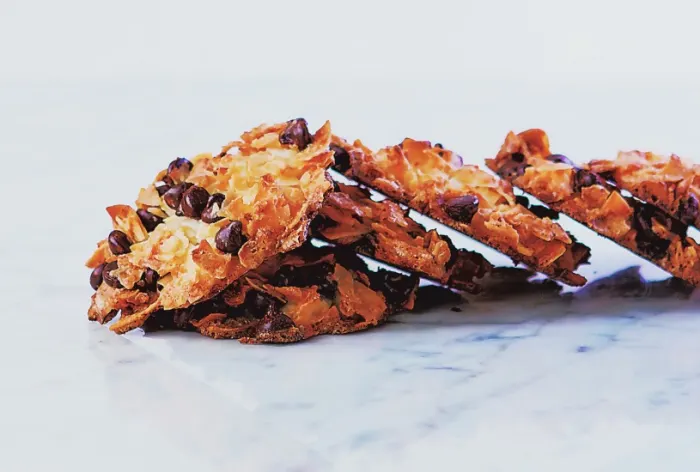

Pesach Macaroons Recipe
These Pesach macaroons have become an absolute staple in our house ever since my aunt shared this tried-and-true recipe with us.
Every year, we look forward to the chewy coconut goodness, perfectly balanced with just the right amount of sweetness
—it's a Pesach treat we can't get enough of. If you're looking to add something special to your Pesach menu,
you won’t want to miss out on
this delicious recipe so you can enjoy it too!

Ingredients
- 2 extra large egg whites
- 3/4 cup sugar
- 3 cups unsweetened shredded coconut
- 1/2 teaspoon almond extract
- 1/4 teaspoon kosher salt
- 1 cup chocolate chips
Preparation
- Preheat oven to 350°F. Line two baking sheets with parchment paper.
- In a large bowl, stir all of the ingredients except the chocolate chips until fully mixed. Let the mixture sit for 3 minutes.
Stir again. Add the chocolate chips and stir to mix well. Using a 1/3-cup ice-cream scoop, place eight or nine mounds on each
prepared baking sheet. Flatten each macaroon, using clean, damp fingers.
- Bake for 15 minutes and rotate the pans for even baking. Bake for 6 minutes more for a deep golden toasted color, or 8 minutes
more for a darker, crunchy macaroon.
- Let cool on the parchment. You will have to peel the cookies from the parchment when they are cooled, but they will come off.
Transfer to a rack to cool completely. Store in an airtight tin with parchment between the layers.